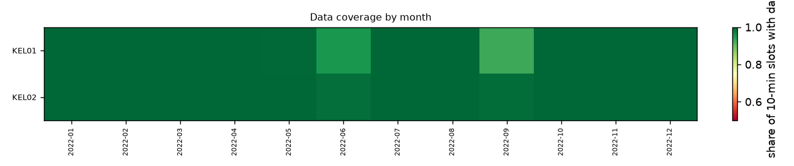
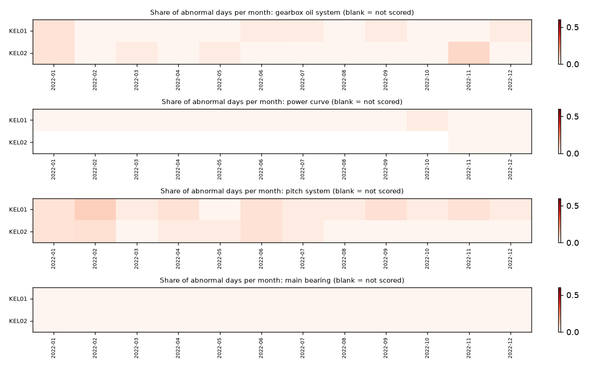
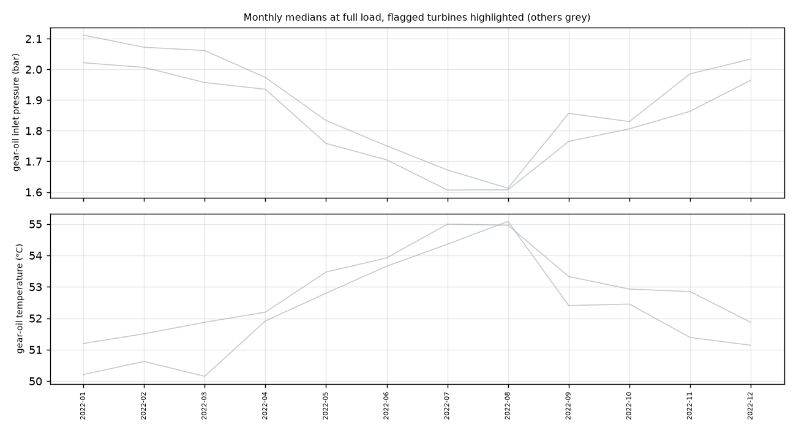
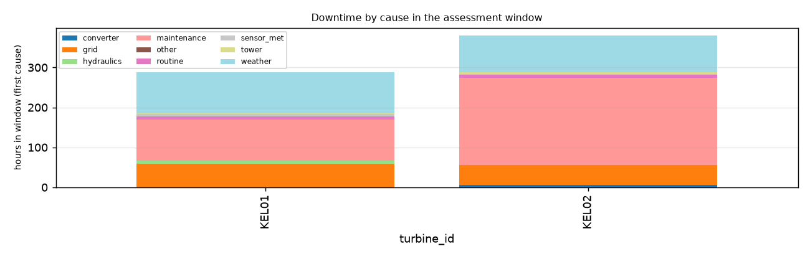

Synthetic ACME-style vendor export generated from Kelmarsh KEL01-02, 2022. 2 turbines, SCADA 01 Jan 2022 to 31 Dec 2022; assessment window: the last 24 months of each turbine (Jan 2022 to Dec 2022). Generated by windml report from the mapping acme_messy.yaml.
All 2 turbines are green: no validated warning sign in the data up to 31 Dec 2022. Green is not a guarantee; see the notes and limits below.
Green: KEL01, KEL02.
How the ratings work. A turbine is amber only for a specific, unusual pattern: gear-oil pump pressure building up far beyond its sister turbines, repeated oil-system or pitch trips, or a faulty sensor. It is red when the pattern is strong (e.g. a pump pressure rise of 2 bar or more) or persistent and still active. Thresholds were chosen on 2017-2020 data from two UK wind farms and checked on 2021-2024: amber or red turbine-months were followed by a logged fault, trip or long service stop within 90 days 76% of the time, against 50% for random turbines in the same months; but only 19% of the turbine-months before such an event carried a flag. Ratings help decide where to look first; most faults still arrive without a warning sign in SCADA data. With only 2 turbines there is no peer comparison, so only very large changes can be flagged.
How sure are we. Confidence is High when the turbine has 3+ years of history, near-complete data, models trained on earlier years, an alarm log and at least 3 sister turbines to compare with; it drops when any of these is missing. A red rating is a reason to look, not a diagnosis.
What this report could not check:
| Turbine | First data | Last data | Months | Coverage (window) | Longest gap (h) | Signals | Native interval | Frozen rows (window) | Stuck sensors (>= 1%) | Stop/fault labels |
|---|---|---|---|---|---|---|---|---|---|---|
| KEL01 | 2022-01-01 | 2022-12-31 | 12 | 99.0% | 49 | 6 | 10min | 0 | - | alarm log |
| KEL02 | 2022-01-01 | 2022-12-31 | 12 | 99.9% | 5 | 6 | 10min | 0 | - | alarm log |

Signals present in at least one turbine: ambient_temp_c, gear_oil_inlet_pressure_bar, gear_oil_temp_c, generator_speed_rpm, main_bearing_front_temp_c, nacelle_position_deg, nacelle_temp_c, pitch_a_deg, power_kw, rotor_speed_rpm, wind_direction_deg, wind_speed_ms.
| Turbine | Flag | Confidence | Tech. avail. | Energy avail. | Fault h/yr | Largest fault cause | Oil ep. | Pitch ep. | Abnormal oil days, final yr | Under-perf. days, final yr | Pump pressure: base to last (bar) | Oil-temp model error |
|---|---|---|---|---|---|---|---|---|---|---|---|---|
| KEL01 | GREEN | Low | 98.5% | - | 17 | hydraulics (8 h) | 0 | 1 | 2% | 0% | - | - |
| KEL02 | GREEN | Low | 97.3% | - | 12 | converter (6 h) | 1 | 0 | 2% | 0% | - | - |
Each turbine gets its own models that predict a signal (oil temperature, bearing temperature, pitch angle, power...) from operating conditions. A day is abnormal when the turbine's median deviation from its own model is beyond 3 robust standard deviations in the harmful direction. Chronic means at least 30% abnormal days in a month.
| Turbine | Training scheme | Models | Window scored | gearbox oil system: abnormal days final yr / chronic months | main bearing: abnormal days final yr / chronic months | pitch system: abnormal days final yr / chronic months | power curve: abnormal days final yr / chronic months |
|---|---|---|---|---|---|---|---|
| KEL01 | cross-fit | 5 | 99% | 2% / 0 | 0% / 0 | 5% / 0 | 0% / 0 |
| KEL02 | cross-fit | 5 | 97% | 2% / 0 | 0% / 0 | 3% / 0 | 0% / 0 |
No turbine has 3 or more consecutive chronic months in the window.

| Turbine | Pump pressure (bar): baseline → last month | Inlet pressure (bar) | Oil temperature (°C) | Baseline months |
|---|---|---|---|---|
| KEL01 | - | 2.0 → 2.0 (+0.0) | 51.3 → 51.1 (-0.1) | 2022-01..2022-06 |
| KEL02 | - | 1.9 → 2.0 (+0.0) | 52.0 → 51.9 (-0.2) | 2022-01..2022-06 |

Fewer than 4 turbines share a drift-check signal, so sensor drift against the fleet could not be checked.
| Turbine | Fault stops | Maintenance | Grid | Weather | Curtailment | Major-fault episodes | Maint. h/yr | Oil / pitch trips |
|---|---|---|---|---|---|---|---|---|
| KEL01 | 75 | 36 | 4 | 12 | 0 | 1 | 102 | 0 / 1 |
| KEL02 | 35 | 30 | 18 | 3 | 0 | 1 | 218 | 1 / 0 |

Most frequent fault stops in the window (all turbines):
| Code | Message | Component | Stops |
|---|---|---|---|
| 6530 | Anemometer defect | sensor_met | 70 |
| 4540 | Tower oscillation X level 2 | tower | 12 |
| 1070 | Drive train monitor level 2 | gearbox | 6 |
| 4510 | Tower oscillation Y level 1 | tower | 6 |
| 6620 | Vane defect | sensor_met | 4 |
| 3110 | Frequency converter error | converter | 4 |
| 5510 | Low hydraulic pressure | hydraulics | 2 |
| 4520 | Tower oscillation X level 1 | tower | 2 |
| 1065 | Drive train monitor level 1 | gearbox | 1 |
| 815 | Rotor overspeed nacelle | rotor | 1 |
| 455 | Repeating error BP52 | pitch | 1 |
| 1800 | Overload gear oil pump | gearbox | 1 |
windml report reads the raw export only through the mapping (windml.ingest), cleans and labels each turbine (QC flags, short-gap interpolation, alarm-log stop labels), trains the models, computes the metrics and writes this report. Every number here is reproducible from the mapping and the raw files.reports/fleet_proof/calibration.md.class_rules). Full-load oil medians assume one oil circuit design across the fleet. Models learn whatever was normal in their training data, including a fault that was already present. Sensor drift is relative to the other turbines, so a fleet-wide drift is invisible. The rating thresholds were calibrated on two UK farms of one turbine family (Senvion MM92/MM82); on other fleets the peer-relative logic still applies but the hit rates are unknown. Ratings look back up to 6 months and only at what SCADA and the alarm log show: inspections, oil analyses, vibration (CMS) data and work orders are not used, so a recent repair or a fault the sensors cannot see changes nothing here.